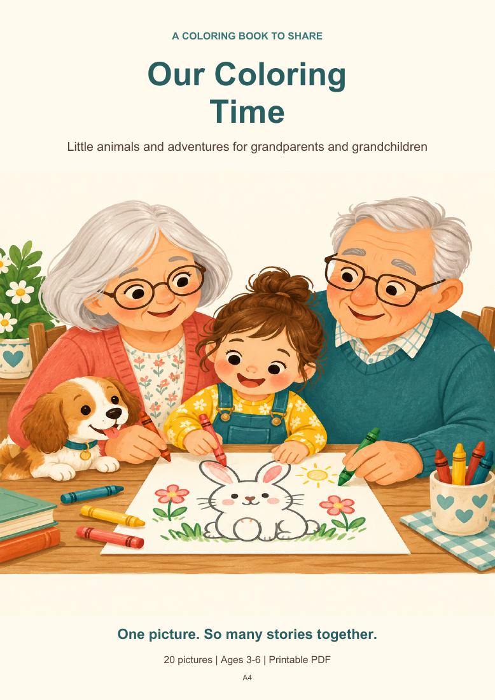
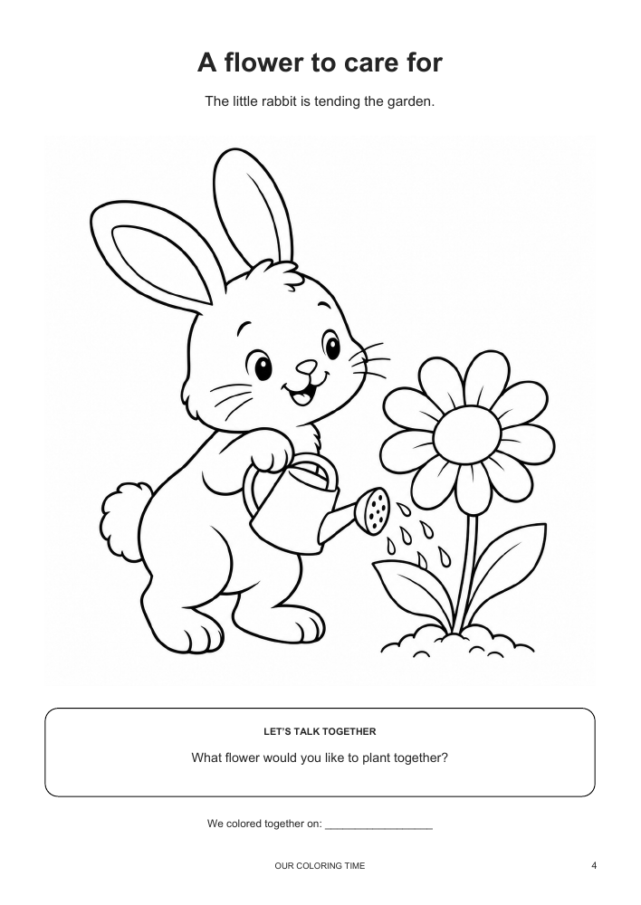
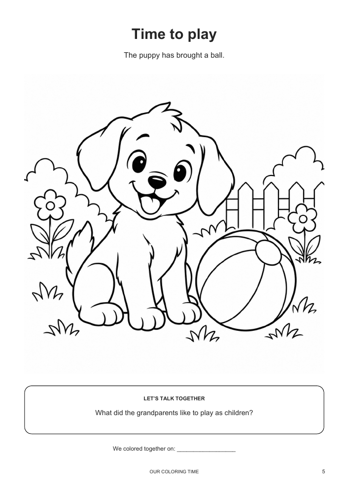
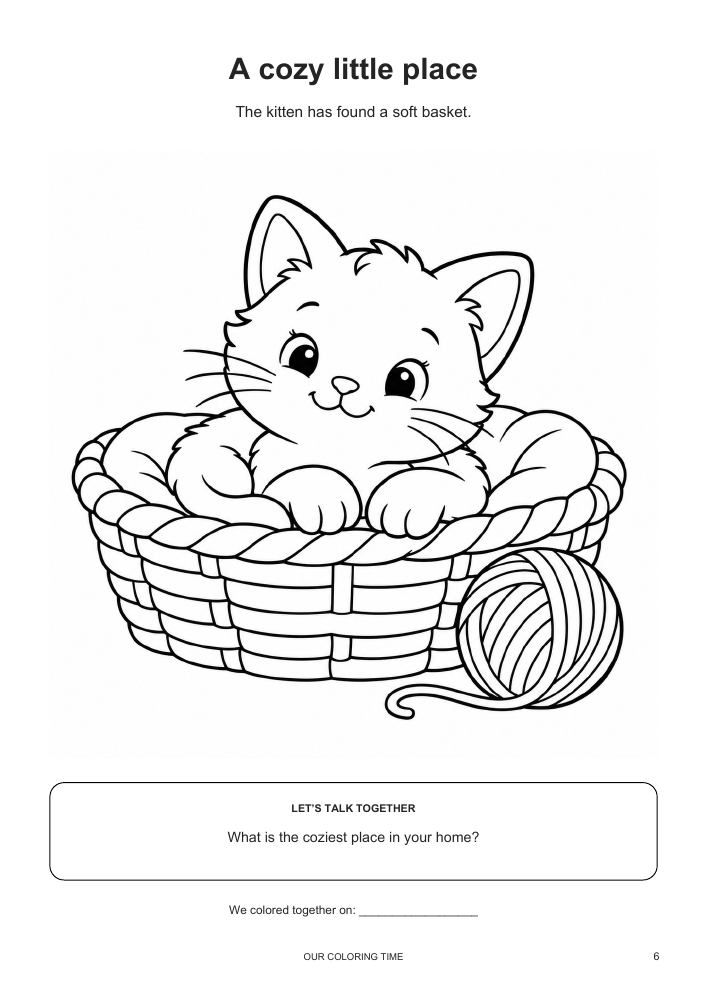

For grandparents & little artists
A little coloring.
A lot of time together.
Pick a picture, reach for the crayons, and see where the conversation goes.
Start with 3 free animal coloring pages from Our Coloring Time. For ages 3–6 with a grown-up. English text. No email needed.
Each free PDF contains three coloring pages and one information page. Print at home. No physical delivery.

A look inside
Three little invitations to slow down.



Print. Color. Talk. Keep.
Choose a page together. Let your little artist choose the colors. Try the conversation prompt, then write the date to remember your time together.
No need to finish the whole picture in one sitting.
Ready for more?
Our Coloring Time · US$5
- 20 animal drawings in a 27-page book
- Conversation prompts and keepsake pages
- Two English PDFs: A4 and US Letter
- Download after successful payment through Payhip
Digital PDF only. No physical book, printing or coloring supplies included. Personal and family use; no resale or redistribution. Illustrations created using AI and reviewed for this book.